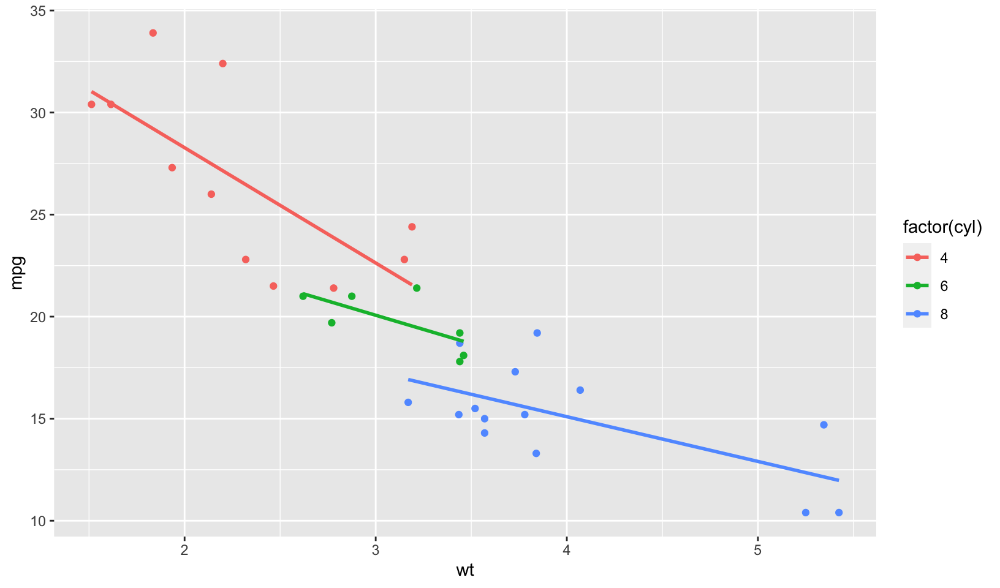

Code
1
2
3
4
5
6
7
8
9
10
11
knitr :: opts_chunk $ set (
fig.path = "plots/" , # for leaf bundles to work nicely
cache = TRUE ,
cache.path = "post_cache/" , # (for leaf bundles, cache in post directory)
fig.retina = 2 ,
fig.width = 8.5 ,
echo = TRUE ,
message = FALSE , warning = FALSE , error = FALSE ,
fig.align = "center" ,
out.width = "95%"
)
This is a test of
{hugodown}
.
Code with/-out Output
1
2
my_packages <- rownames ( installed.packages ())
n_packages <- length ( my_packages )
And some filler text between chunks.
1
tail ( tibble :: enframe ( my_packages ))
1
2
3
4
5
6
7
8
9
## # A tibble: 6 x 2
## name value
## <int> <chr>
## 1 402 xts
## 2 403 yaml
## 3 404 yardstick
## 4 405 zeallot
## 5 406 zip
## 6 407 zoo
Plots
The entire chunk is contained in <pre> tags :(
Tabular display of code with line numbers is set in config, but not applied here
1
2
3
4
5
library ( ggplot2 )
ggplot ( mtcars , aes ( x = wt , y = mpg , color = factor ( cyl ))) +
geom_point () +
geom_smooth ( method = lm , se = FALSE )

Table
1
2
3
4
5
6
library ( dplyr )
sessioninfo :: session_info () $ packages %>%
as_tibble () %>%
filter ( package %in% c ( "hugodown" , "dplyr" , "ggplot2" )) %>%
select ( package , loadedversion , source ) %>%
knitr :: kable ( caption = "A neato little table" )
package
loadedversion
source
dplyr
1.0.0
CRAN (R 4.0.0)
ggplot2
3.3.1
CRAN (R 4.0.0)
Shortcodes
Inline
Inline shortcode without tweaks: Hello
{hugodown}
.
Using blogdown::shortcode is not well suited in
{hugodown}
-land I think, but that's not really hugodown's fault. The html-preserving comments are inserted with newlines, which might explain this.
Block-level
Here’s a figure shortcode:
The same shortcode with blogdown::shortcode
<img src="plots/a-plot-1.png"/>
This is a footnote in ^[inline format] as used by pandoc but not supported by Hugo’s Goldmark ^[Hello there].
Here’s a reference-style footnote
Math and stuff
(Rmd: Have not applied fixes to make it work yet)
This is text with inline math \(\sum_{n=1}^{\infty} 2^{-n} = 1\) and with math blocks:
$$
\sum_{n=1}^{\infty} 2^{-n} = 1
$$
Heading
Another heading
text
text
text
text
text
text
Session Info
Session Info
1
sessioninfo :: session_info () $ packages
1
2
3
4
5
6
7
8
9
10
11
12
13
14
15
16
17
18
19
20
21
22
23
24
25
26
27
28
29
30
31
32
33
34
35
36
37
38
39
40
41
42
43
44
45
46
47
48
49
50
51
52
## package * version date lib source
## assertthat 0.2.1 2019 - 03 - 21 [ 1 ] CRAN ( R 4.0.0 )
## blogdown 0.19 2020 - 05 - 22 [ 1 ] CRAN ( R 4.0.0 )
## bookdown 0.19 2020 - 05 - 15 [ 1 ] CRAN ( R 4.0.0 )
## cli 2.0.2 2020 - 02 - 28 [ 1 ] CRAN ( R 4.0.0 )
## codetools 0.2 - 16 2018 - 12 - 24 [ 1 ] CRAN ( R 4.0.0 )
## colorspace 1.4 - 1 2019 - 03 - 18 [ 1 ] CRAN ( R 4.0.0 )
## crayon 1.3.4 2017 - 09 - 16 [ 1 ] CRAN ( R 4.0.0 )
## digest 0.6.25 2020 - 02 - 23 [ 1 ] CRAN ( R 4.0.0 )
## dplyr * 1.0.0 2020 - 05 - 29 [ 1 ] CRAN ( R 4.0.0 )
## ellipsis 0.3.1 2020 - 05 - 15 [ 1 ] CRAN ( R 4.0.0 )
## evaluate 0.14 2019 - 05 - 28 [ 1 ] CRAN ( R 4.0.0 )
## fansi 0.4.1 2020 - 01 - 08 [ 1 ] CRAN ( R 4.0.0 )
## farver 2.0.3 2020 - 01 - 16 [ 1 ] CRAN ( R 4.0.0 )
## generics 0.0.2 2018 - 11 - 29 [ 1 ] CRAN ( R 4.0.0 )
## ggplot2 * 3.3.1 2020 - 05 - 28 [ 1 ] CRAN ( R 4.0.0 )
## glue 1.4.1 2020 - 05 - 13 [ 1 ] CRAN ( R 4.0.0 )
## gtable 0.3.0 2019 - 03 - 25 [ 1 ] CRAN ( R 4.0.0 )
## highr 0.8 2019 - 03 - 20 [ 1 ] CRAN ( R 4.0.0 )
## htmltools 0.4.0 2019 - 10 - 04 [ 1 ] CRAN ( R 4.0.0 )
## jsonlite 1.6.1 2020 - 02 - 02 [ 1 ] CRAN ( R 4.0.0 )
## knitr 1.28 2020 - 02 - 06 [ 1 ] CRAN ( R 4.0.0 )
## labeling 0.3 2014 - 08 - 23 [ 1 ] CRAN ( R 4.0.0 )
## lattice 0.20 - 41 2020 - 04 - 02 [ 1 ] CRAN ( R 4.0.0 )
## lifecycle 0.2.0 2020 - 03 - 06 [ 1 ] CRAN ( R 4.0.0 )
## magrittr 1.5 2014 - 11 - 22 [ 1 ] CRAN ( R 4.0.0 )
## Matrix 1.2 - 18 2019 - 11 - 27 [ 1 ] CRAN ( R 4.0.0 )
## mgcv 1.8 - 31 2019 - 11 - 09 [ 1 ] CRAN ( R 4.0.0 )
## munsell 0.5.0 2018 - 06 - 12 [ 1 ] CRAN ( R 4.0.0 )
## nlme 3.1 - 148 2020 - 05 - 24 [ 1 ] CRAN ( R 4.0.0 )
## pillar 1.4.4 2020 - 05 - 05 [ 1 ] CRAN ( R 4.0.0 )
## pkgconfig 2.0.3 2019 - 09 - 22 [ 1 ] CRAN ( R 4.0.0 )
## purrr 0.3.4 2020 - 04 - 17 [ 1 ] CRAN ( R 4.0.0 )
## R6 2.4.1 2019 - 11 - 12 [ 1 ] CRAN ( R 4.0.0 )
## Rcpp 1.0.4.6 2020 - 04 - 09 [ 1 ] CRAN ( R 4.0.0 )
## reticulate 1.16 2020 - 05 - 27 [ 1 ] CRAN ( R 4.0.0 )
## rlang 0.4.6 2020 - 05 - 02 [ 1 ] CRAN ( R 4.0.0 )
## rmarkdown 2.2 2020 - 05 - 31 [ 1 ] CRAN ( R 4.0.0 )
## rstudioapi 0.11 2020 - 02 - 07 [ 1 ] CRAN ( R 4.0.0 )
## scales 1.1.1 2020 - 05 - 11 [ 1 ] CRAN ( R 4.0.0 )
## sessioninfo 1.1.1 2018 - 11 - 05 [ 1 ] CRAN ( R 4.0.0 )
## stringi 1.4.6 2020 - 02 - 17 [ 1 ] CRAN ( R 4.0.0 )
## stringr 1.4.0 2019 - 02 - 10 [ 1 ] CRAN ( R 4.0.0 )
## tibble 3.0.1 2020 - 04 - 20 [ 1 ] CRAN ( R 4.0.0 )
## tidyselect 1.1.0 2020 - 05 - 11 [ 1 ] CRAN ( R 4.0.0 )
## utf8 1.1.4 2018 - 05 - 24 [ 1 ] CRAN ( R 4.0.0 )
## vctrs 0.3.1 2020 - 06 - 05 [ 1 ] CRAN ( R 4.0.0 )
## withr 2.2.0 2020 - 04 - 20 [ 1 ] CRAN ( R 4.0.0 )
## xfun 0.14 2020 - 05 - 20 [ 1 ] CRAN ( R 4.0.0 )
## yaml 2.2.1 2020 - 02 - 01 [ 1 ] CRAN ( R 4.0.0 )
##
## [ 1 ] / Library / Frameworks / R . framework / Versions / 4.0 / Resources / library